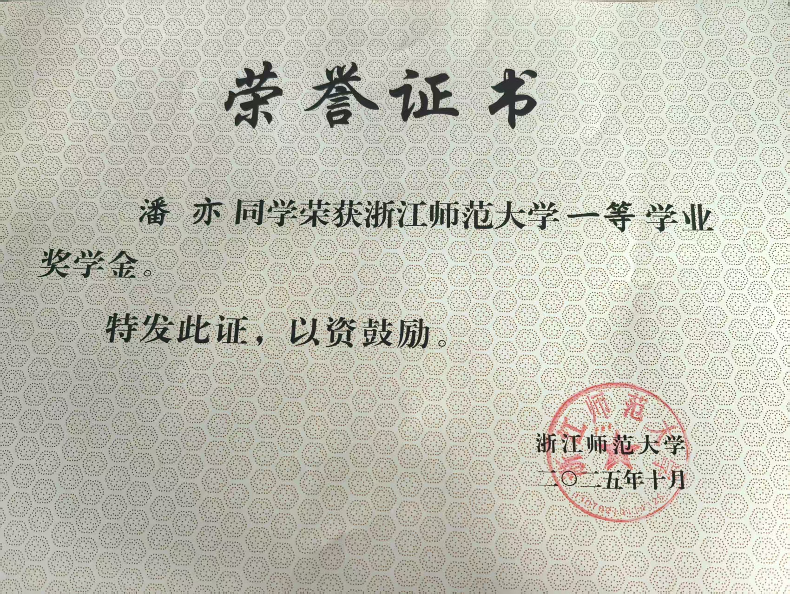
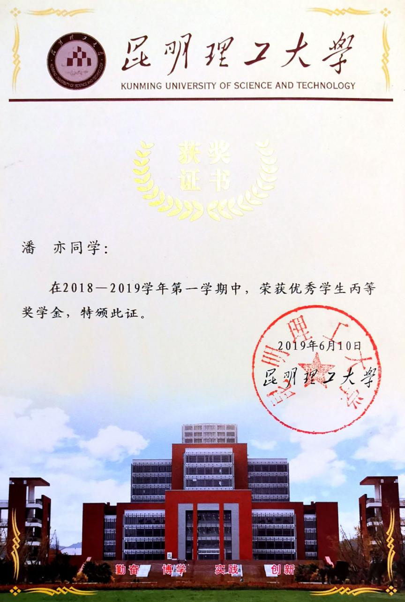
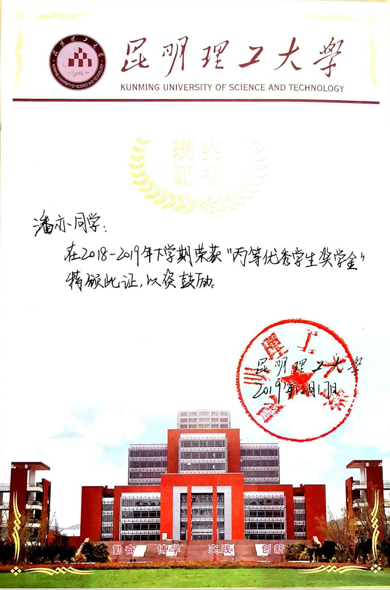
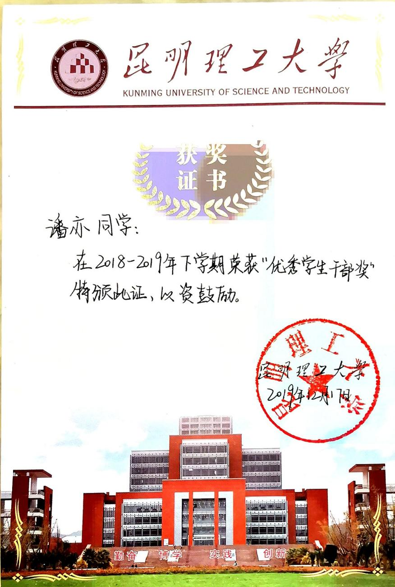
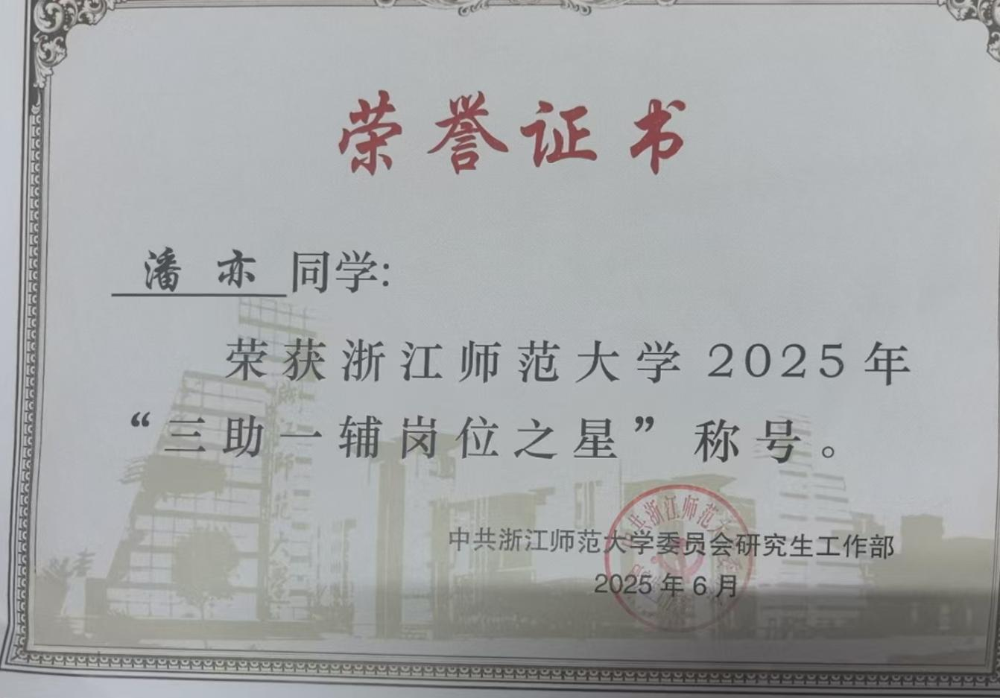
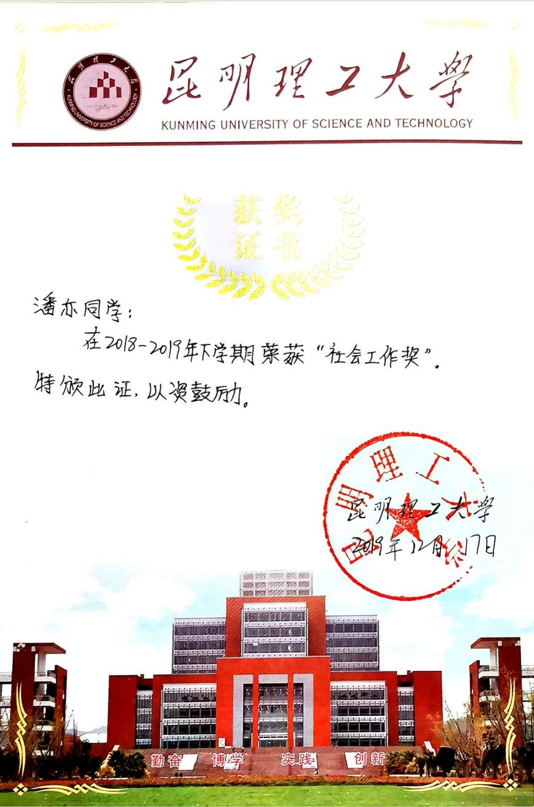
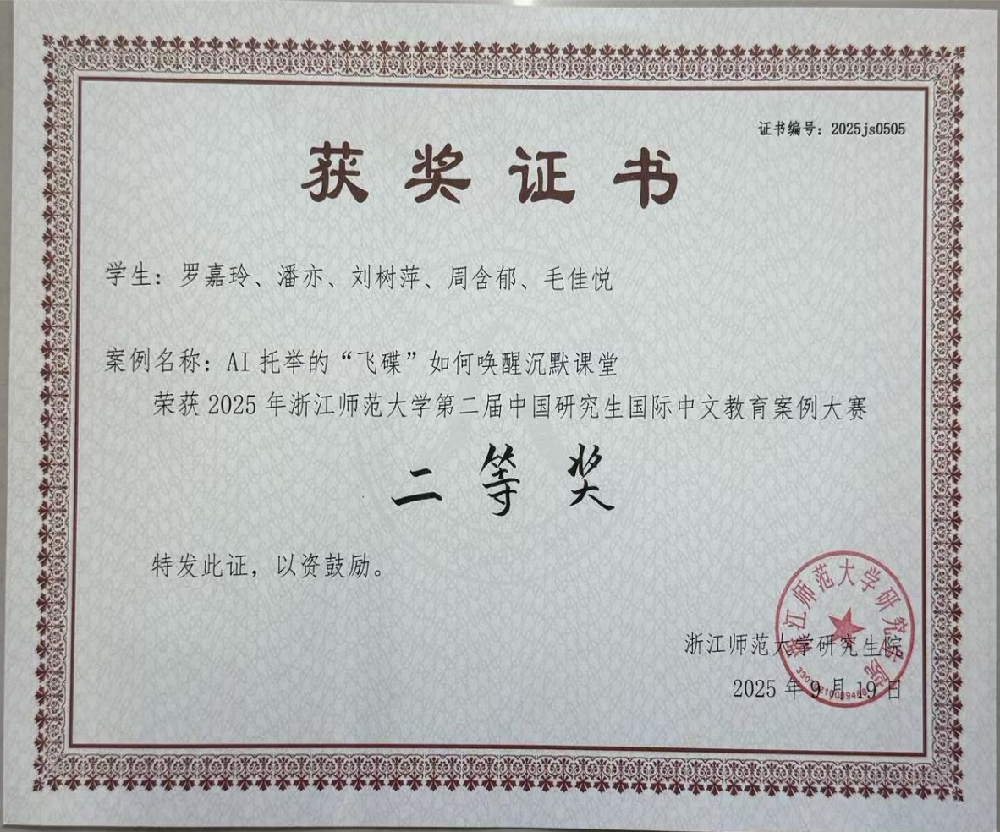
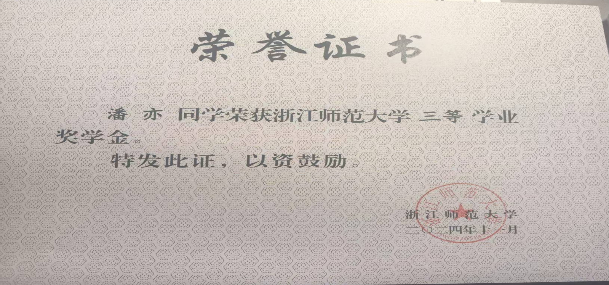

AWARDS & HONORS
获奖材料
集中展示在本科及硕士阶段获得的奖学金、荣誉证书与赛事奖项。点击上方按钮，可下载原始 Word 汇总文件。








需要留存完整材料？
下载 Word 文件下载文件后，可在 Word 中查看和保存。
集中展示在本科及硕士阶段获得的奖学金、荣誉证书与赛事奖项。点击上方按钮，可下载原始 Word 汇总文件。








下载文件后，可在 Word 中查看和保存。